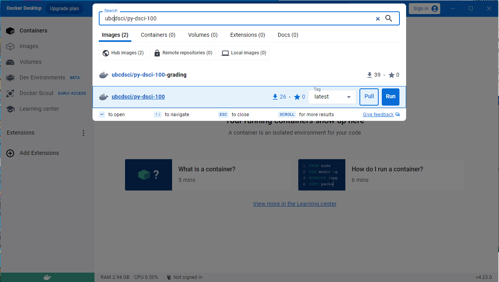
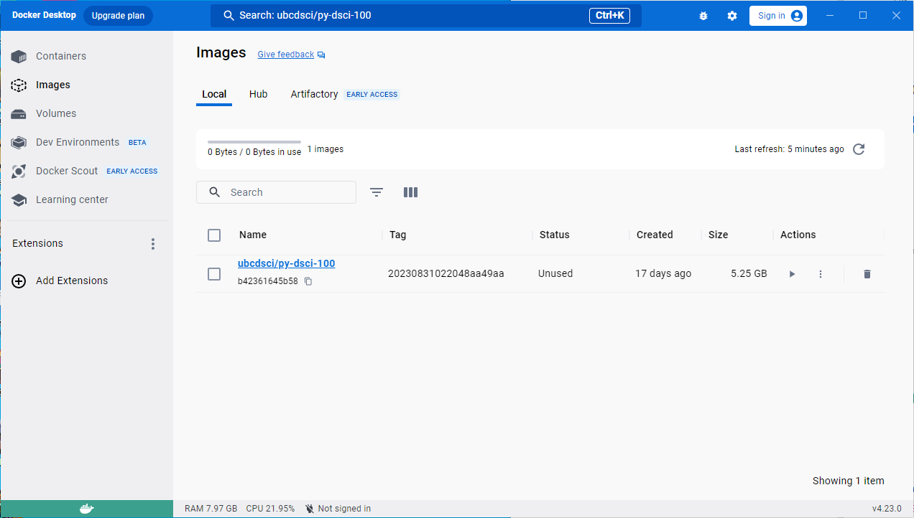
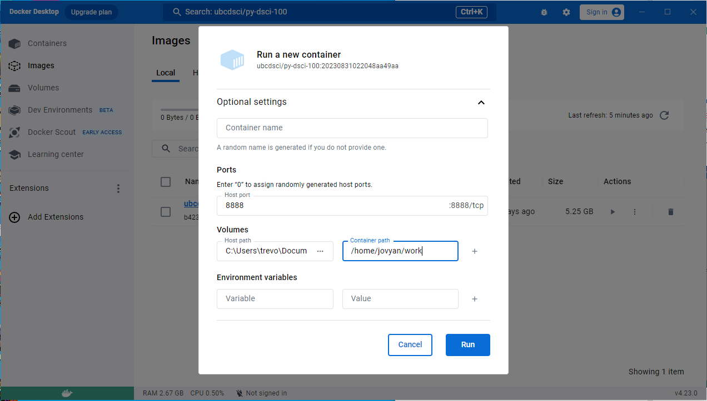
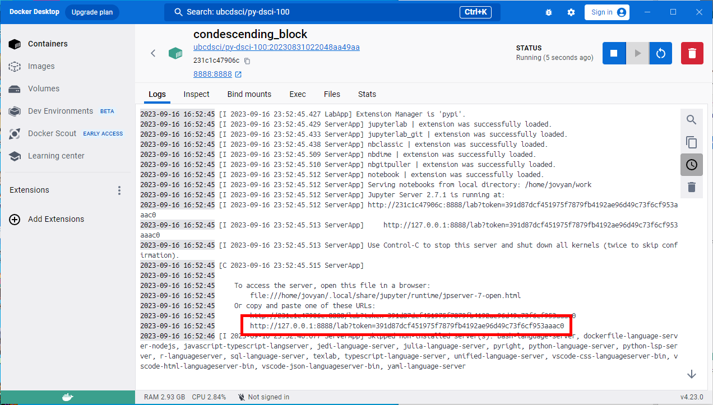
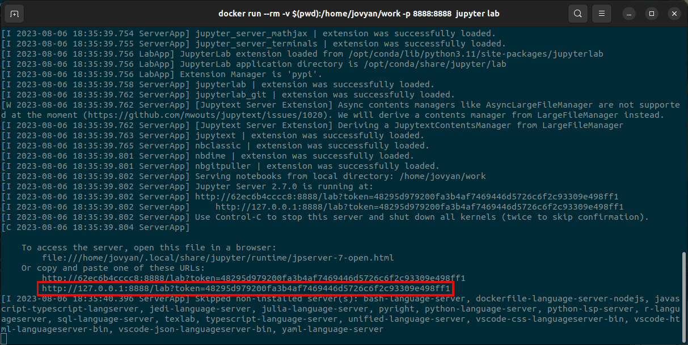
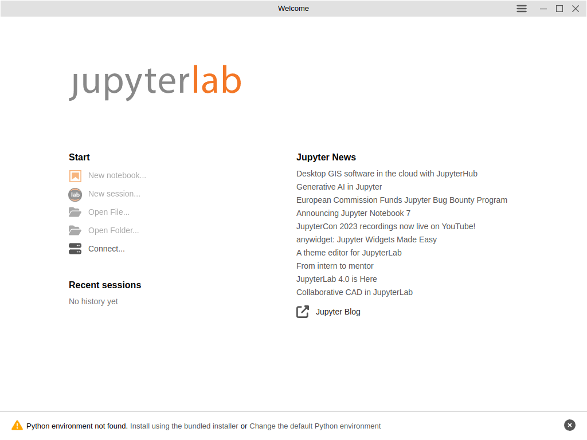
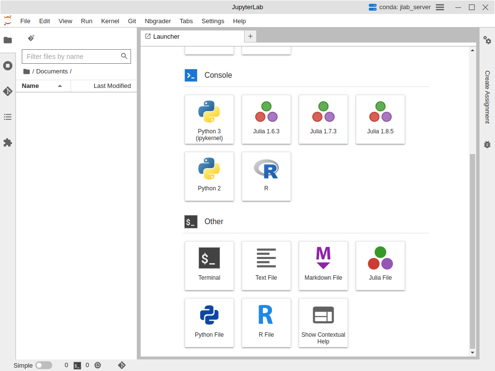

13. 配置你的计算机#
13.1. 概述#
在本章中，你将学会如何在自己的计算机上配置好跟随本书学习所需的软件。安装说明会随计算机环境的不同而变化，因此我们为多种操作系统（Ubuntu Linux、MacOS 和 Windows）分别给出了说明。本章的说明在多数系统上应该都能用，但我们专门验证过：它们确实可以在一台满足以下条件的计算机上正常工作：
运行 Windows 10 家庭版、MacOS 13 Ventura 或 Ubuntu 22.04；
使用 64 位 CPU；
能够连接互联网；
以英文为默认语言。
13.2. 本章学习目标#
学完本章后，你将能够：
下载本书配套的练习册（worksheet）。
安装 Docker 虚拟化引擎。
在 Docker 容器中运行 JupyterLab，编辑并运行练习册。
安装 Git、JupyterLab Desktop 和 Python 包。
用 JupyterLab Desktop 编辑并运行练习册。
13.3. 获取本书的练习册#
本书的练习册包含各章习题，已发布在网上：https://worksheets.python.datasciencebook.ca。你可以用页面顶部的链接把练习册下载成一个压缩的 zip 文件。解压下载的文件后，你会得到一个文件夹，里面是本书配套的全部 Jupyter 笔记本练习册。关于 Jupyter 笔记本的使用方法，参见第 11 章。
13.4. 使用 Docker#
下载好练习册之后，接下来要在自己的计算机上安装并运行处理 Jupyter 笔记本所需的软件。手动完成这些配置可能相当棘手，会牵涉许多不同的软件包，更别提还要让所有版本都对上——练习册和自动评分测试都可能无法工作，除非所有版本都完全正确！为简单起见，我们建议你改用 Docker。Docker 能让你在预先构建好的容器（container）里运行 Jupyter 笔记本，这个容器恰好带有运行本书练习册所需的全部软件包的正确版本。
备注
容器是你计算机内部的一块虚拟用户空间。在容器里，你可以让软件独立运行，不会干扰计算机上已有的其他软件。本书用一个容器来运行特定版本的 Python 编程语言，以及其他必需的软件包。即使你计算机上安装的是另一个版本的 Python，容器也能保证练习册正常运行——甚至你根本没装 Python 也一样！
13.4.1. Windows#
安装要在 Windows 上安装 Docker，请访问在线 Docker 文档，下载 Docker Desktop Installer.exe 文件。双击该文件打开安装程序，按安装向导的提示操作；出现提示时选择 WSL-2，而不是 Hyper-V。
备注
初次在 Windows 上运行 Docker 时，偶尔会遇到报错信息。下面是一些你可能遇到的常见报错：
如果需要更新 WSL，可以在开始菜单（Start menu）中输入
cmd.exe打开命令行，输入wsl --update更新 WSL。如果计算机上的管理员账户与你的用户账户不同，就必须把该用户加入“docker-users”组。以管理员身份运行计算机管理（Computer Management），进入
Local Users和Groups -> Groups -> docker-users。在docker-users组上右键单击，把该用户加入该组。注销后重新登录，更改才会生效。如果需要启用虚拟化，就必须修改 BIOS。重启计算机，按热键进入 BIOS（通常是 Delete、Esc 或某个 F# 键）。找到“高级（Advanced）”菜单，在 CPU 设置下把“虚拟化（Virtualization）”选项设为“已启用（enabled）”。然后保存更改并重启计算机。如果你不熟悉 BIOS 修改，最好请一位专家来帮忙，因为改 BIOS 有风险。具体步骤超出本书范围。
运行 JupyterLab 运行 Docker Desktop。等它启动之后，需要下载并运行我们为练习册准备好的 Docker 镜像（image）：镜像就像一台预先装好全部正确软件包的计算机的“快照”（snapshot）。这一步只需做一次；下次再运行 Docker Desktop 时，镜像依然会保留。在 Docker Desktop 的搜索栏中输入 ubcdsci/py-dsci-100，这就是镜像的名称。列表里会出现 ubcdsci/py-dsci-100 镜像（图 13.1），标签（Tag）下拉菜单中显示的是“latest”。继续之前，我们需要把“latest”改成正确的镜像版本。要找到正确的标签，请打开练习册仓库中的 Dockerfile，找到以 FROM ubcdsci/py-dsci-100: 开头的那一行，其后跟着由一串数字和字母组成的标签。回到 Docker Desktop，在标签下拉菜单中点击该标签，选中正确的镜像版本。然后点击“拉取（Pull）”按钮下载镜像。
{kind=link}

图 13.1 Docker Desktop 搜索窗口。下载镜像之前，务必点击标签下拉菜单，找到正确的镜像版本，再点击“拉取”按钮下载。#
镜像下载完成后，点击 Docker Desktop 窗口左侧的“镜像（Images）”按钮（图 13.2）。在“本地（Local）”标签页下可以看到刚下载的镜像。
{kind=link}

图 13.2 Docker Desktop 的镜像标签页。#
要用该镜像启动一个容器，点击镜像旁边的播放按钮。这时会打开运行配置菜单（图 13.3）。展开“可选设置（Optional settings）”下拉菜单。在“主机端口（Host port）”文本框中输入 8888。在“卷（Volumes）”一节中，点击“主机路径（Host path）”框，选择存放 Jupyter 练习册的文件夹。在“容器路径（Container path）”文本框中输入 /home/jovyan/work。然后点击“运行（Run）”按钮启动容器。
{kind=link}

图 13.3 Docker Desktop 的容器运行配置菜单。#
点击“运行”按钮后，你会看到一个终端。Docker 容器启动时，终端会打印一些文本。等文本不再滚动，在终端里找到以 http://127.0.0.1:8888 开头的 URL（在图 13.4 中用红框标出），把它粘贴到浏览器中即可启动 JupyterLab。
{kind=link}

图 13.4 运行 Docker 容器后的终端文本。红框标出的是你应该粘贴到浏览器中打开 JupyterLab 的 URL。#
做完工作后，一定要点击红色垃圾桶图标关闭并删除该容器（位于图 13.4 的右上角）。不这样做，就无法再次启动该容器。有关在 Windows 上安装和运行 Docker 的更多信息以及故障排除技巧，参见在线 Docker 文档。
13.4.2. MacOS#
安装要在 MacOS 上安装 Docker，请访问在线 Docker 文档，下载适合你计算机的 Docker.dmg 安装文件。要确定哪种安装程序适合你的机器，就得先弄清计算机用的是 Intel 处理器（较老的机器）还是 Apple 处理器（较新的机器）；Apple 支持页面上有帮助你判断处理器型号的信息。下载完成后，双击该文件打开安装程序，然后把 Docker 图标拖到“应用程序（Applications）”文件夹。双击“应用程序”文件夹中的图标即可启动 Docker。在安装窗口中，采用推荐设置。
运行 JupyterLab 运行 Docker Desktop。等它启动之后，按上面 Windows 一节中运行 JupyterLab 的说明操作（用户界面完全相同）。有关在 MacOS 上安装和运行 Docker 的更多信息以及故障排除技巧，参见在线 Docker 文档。
13.4.3. Ubuntu#
安装要在 Ubuntu 上安装 Docker，请打开终端并输入以下五条命令。
sudo apt update
sudo apt install ca-certificates curl gnupg
curl -fsSL https://get.docker.com -o get-docker.sh
sudo chmod u+x get-docker.sh
sudo sh get-docker.sh
运行 JupyterLab 首先打开练习册仓库中的 Dockerfile，找到以 FROM ubcdsci/py-dsci-100: 开头的那一行，其后跟着由一串数字和字母组成的标签。然后在终端中切换到你想运行 JupyterLab 的目录，运行下面这条命令，并把 TAG 换成你刚才找到的标签。
docker run --rm -v $(pwd):/home/jovyan/work -p 8888:8888 ubcdsci/py-dsci-100:TAG jupyter lab
Docker 容器启动时，终端会打印一些文本。等文本不再滚动，在终端里找到以 http://127.0.0.1:8888 开头的 URL（在图 13.5 中用红框标出），把它粘贴到浏览器中即可启动 JupyterLab。有关在 Ubuntu 上安装和运行 Docker 的更多信息以及故障排除技巧，参见在线 Docker 文档。
{kind=link}

图 13.5 在 Ubuntu 中运行 Docker 容器后的终端文本。红框标出的是你应该粘贴到浏览器中打开 JupyterLab 的 URL。#
13.5. 使用 JupyterLab Desktop#
你也可以用 JupyterLab Desktop 在计算机上运行本书配套的练习册。相比 Docker，JupyterLab Desktop 的优点在于安装起来可能更容易；Docker 有时会遇到相当技术性的问题（尤其是在 Windows 计算机上），需要专家来排除故障。JupyterLab Desktop 的缺点是，你最终装上的 Python 包版本有可能并不是练习册所需的全部正确版本（尽管这种可能性很小）。而 Docker 则保证练习册完全按预期运行。
本节将介绍如何安装 JupyterLab Desktop、Git 以及 JupyterLab Git 扩展（用于版本控制，见第 12 章），还有运行本书代码所需的全部 Python 包。
13.5.1. Windows#
安装首先安装用于版本控制的 Git。打开 Git 下载页面，下载 Windows 版 Git。下载完成后，运行安装程序，所有页面都接受默认配置。接着访问 JupyterLab Desktop 主页的“安装”一节。下载适用于 Windows 的 JupyterLab-Setup-Windows.exe 安装文件。双击安装程序运行，采用默认设置。点击桌面上的图标即可运行 JupyterLab Desktop。
配置 JupyterLab Desktop 接下来，在弹出的 JupyterLab Desktop 图形界面中（图 13.6），底部会显示“未找到 Python 环境（Python environment not found）”这段文字。点击“使用自带安装程序安装（Install using the bundled installer）”来配置环境。
{kind=link}

图 13.6 JupyterLab Desktop 的图形用户界面。#
接下来，我们需要添加 JupyterLab Git 扩展（这样就能直接在 JupyterLab Desktop 里使用版本控制）、IPython 内核（用于启用 Python 编程语言）以及各种 Python 软件包。点击 JupyterLab Desktop 界面中的“新建会话…（New session…）”，然后滚动到底部，点击“其他（Other）”标题下的“终端（Terminal）”（图 13.7）。
{kind=link}

图 13.7 JupyterLab Desktop 会话窗口，底部显示了终端选项。#
在这个终端中运行以下命令：
pip install --upgrade jupyterlab-git
conda env update --file https://raw.githubusercontent.com/UBC-DSCI/data-science-a-first-intro-python-worksheets/main/environment.yml
第二条命令会安装练习册仓库中 environment.yml 文件指定的 Python 和软件包版本。我们会始终保持 environment.yml 文件中的版本为最新，使其与本书配套的练习册兼容。软件全部安装完成后，最好先完全重启 JupyterLab Desktop，再开始做数据分析。这样能确保你安装的软件和设置都正确就位、可以使用。
13.5.2. MacOS#
安装首先安装用于版本控制的 Git。打开终端（操作视频），输入以下命令：
xcode-select --install
接着访问 JupyterLab Desktop 主页的“安装”一节。下载 JupyterLab-Setup-MacOS-x64.dmg 或 JupyterLab-Setup-MacOS-arm64.dmg 安装文件。要确定哪种安装程序适合你的机器，得先弄清计算机用的是 Intel 处理器（较老的机器）还是 Apple 处理器（较新的机器）；Apple 支持页面上有帮助你判断处理器型号的信息。下载完成后，双击该文件打开安装程序，然后把 JupyterLab Desktop 图标拖到“应用程序”文件夹。双击“应用程序”文件夹中的图标即可启动 JupyterLab Desktop。
配置 JupyterLab Desktop 从这里往后，请让 JupyterLab Desktop 保持运行，按 Windows 一节中配置 JupyterLab Desktop 的说明来配置环境、安装 JupyterLab Git 扩展，并安装练习册所需的各种 Python 软件包。
13.5.3. Ubuntu#
安装首先安装用于版本控制的 Git。打开终端，输入以下命令：
sudo apt update
sudo apt install git
接着访问 JupyterLab Desktop 主页的“安装”一节。下载适用于 Ubuntu/Debian 的 JupyterLab-Setup-Debian.deb 安装文件。打开终端，切换到安装文件下载到的位置，然后运行命令
sudo dpkg -i JupyterLab-Setup-Debian.deb
用下面的命令运行 JupyterLab Desktop
jlab
配置 JupyterLab Desktop 从这里往后，请让 JupyterLab Desktop 保持运行，按 Windows 一节中配置 JupyterLab Desktop 的说明来配置环境、安装 JupyterLab Git 扩展，并安装练习册所需的各种 Python 软件包。